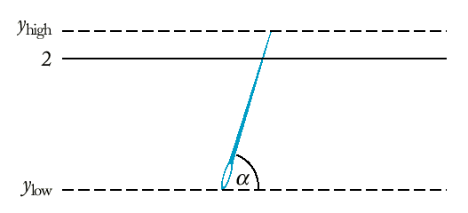

План:
Четене на данни и пренасочване на входния и изходния потоци
Симулации
Самостоятелно тестване на функции
Подбор на тестови примери
Оценка на резултатите от тестването
Макрос assert
Трасиране на програмата
Конструкцията
в C и C++
while (cin
>> x)
чете данни от стндартния вход докато не се
появи грешка във входния поток или край на входния поток.
Грешка във входния поток се появява когато:
-- има несъответствие между типа на променливата x и
типа на въведената стойност или
-- се въведе специален символ за край на входа (край на
файла).
За операционната система Windows този символ е Ctrl-Z (ASCII
26), за UNIX и MAC OS - Ctrl D (ASCII 04).
Пример: Брой на
думите от входния поток. Дума е низ без интервали.
Разделители между думите са интервали или край на ред (white
space).
// words.cpp
#include <iostream> #include <string> using namespace std; int main() { int count = 0; string word; while (cin >> word) count++; cout << count << " words." << endl; return 0; }
| nkirov@cpp % c++ words.cpp nkirov@cpp % ./a.out abc xyz 123 words stop 5 words. nkirov@cpp % |
string line;Пример: Брой на редовете от входния поток.
while (getline(cin, line))
{ process line
}
| nkirov@cpp % c++ lines.cpp nkirov@cpp % ./a.out first line secod line one empty line 4 lines. |
char ch;Пример: Брой на символите (знаците) във входния поток.
while (cin.get(ch))
{ process ch
}
| nkirov@cpp % c++ chars.cpp nkirov@cpp % ./a.out 12345 aaaaa 12 chars. nkirov@cpp % |
int main()random.cpp
{ int i;
for (i = 1; i <= 10; i++)
{
int r = rand();
cout << r << "\n";
}
return 0;
}
За генериране на случайни цели числа в интервала [a, b] се използва следната функция:Time now;
int seed = now.seconds_from(Time(0,0,0));
srand(seed);
int rand_int(int a, int b)Пример: Хвърляне на зарове.
{
return a + rand() % (b - a + 1);
}
// dice.cpp
#include <iostream> #include <string> #include <cstdlib> #include <ctime> using namespace std; /** Sets the seed of the random number generator. */ void rand_seed() { int seed = static_cast<int>(time(0)); srand(seed); } /** Compute a random integer in a range @param a the bottom of the range @param b the top of the range @return a random integer x, a <= x and x <= b */ int rand_int(int a, int b) { return a + rand() % (b - a + 1); } int main() { rand_seed(); int i; for (i = 1; i <= 10; i++) { int d1 = rand_int(1, 6); int d2 = rand_int(1, 6); cout << d1 << " " << d2 << "\n"; } cout << "\n"; return 0; }
| nkirov@Kcpp % c++ dice.cpp nkirov@cpp % ./a.out 2 1 1 6 2 3 5 1 nkirov@cpp % ./a.out 5 3 3 2 3 1 5 1 |
double rand_double(double a, double b)
{
return a + (b - a) * rand() * (1.0 / RAND_MAX);
}
Хипотезата на Бюфон е, че отношението на броя на всички опити към броя на попаденията клони към числото pi.
void
rand_seed()
/* ЦЕЛ: Инициализира генератора за
случайни числа
*/
{ int seed =
static_cast<int>(time(0));
srand(seed);
}
double rand_double(double a, double
b)
/* ЦЕЛ: намира случайно число в
интервала [a, b]
ПОЛУЧАВА: границите на
интервала
ВРЪЩА: случайно число x,
a <= x и x <= b
*/
{ return a + (b -
a)*rand()*(1.0/RAND_MAX);
}
double deg2rad(double alpha)
/* ЦЕЛ: превръща градуси в
радиани
ПОЛУЧАВА: alpha -
големина на ъгъл в градуси
ВРЪЩА: големината
на ъгъла в радиани
*/
{ const double PI =
3.141592653589793;
return alpha * PI / 180;
}
int main()
{ int NTRIES = 10000;
int i;
int hits = 0;
rand_seed();
for (i = 1; i <=
NTRIES; i++)
{ double ylow =
rand_double(0, 2);
double
angle = rand_double(0, 180);
double
yhigh = ylow + sin(deg2rad(angle));
if
(yhigh >= 2) hits++;
}
cout << "Tries /
Hits = " << NTRIES*(1.0/hits) << "\n";
return 0;
}
** Самостоятелно тестване на функции
* Данните, с които ще се тества функцията, се получават по
3 начина:
-- от входния поток (от клавиатура или от текстов
файл с пренасочване на входния поток);
-- като стойности, получени от цикъл;
-- случайни числа.
* Примери за тестване на функцията squareroot за намиране на
квадратен корен по метода на Херон (Babylonian
method).
x0 = a,
xn+1
= ( xn + a/xn ) / 2, n
= 0,1, 2, 3, ...
Първи пример - данните идват от входния
поток:
// sqrtest1.cpp
#include <iostream>
#include <cmath>
using namespace std;
/**
Tests whether two floating-point numbers are
approximately equal.
@param x a floating-point number
@param y another floating-point number
@return true if x and y are approximately equal
*/
bool approx_equal(double x, double y)
{
const double EPSILON = 1E-14;
if (x == 0) return fabs(y) <= EPSILON;
if (y == 0) return fabs(x) <= EPSILON;
return fabs(x - y) / max(fabs(x), fabs(y)) <= EPSILON;
}
/* Function to be tested */
/**
Computes the square root using Heron's formula
@param a an integer >= 0
@return the square root of a
*/
double squareroot(double a)
{
if (a == 0) return 0;
double xnew = a;
double xold;
do
{ xold = xnew;
xnew = (xold + a / xold) / 2;
}
while (!approx_equal(xnew, xold));
return xnew;
}
/* Test harness */
int main()
{
double x;
while (cin >> x)
{
double y = squareroot(x);
cout << "squareroot of " << x << " = " << y << "\n";
}
return 0;
}
| 25 squareroot of 25 = 5 3 squareroot of 3 = 1.73205 q |
Втори пример - входните стойности на функцията се генерират от цикъл.
// sqrtest2.cpp
/* Test harness */
int main()
{
double x;
for (x = 0; x <= 10; x = x + 0.5)
{ double y = squareroot(x);
cout << "squareroot of " << x << " = " << y << "\n";
}
return 0;
}
| squareroot of 0 = 0 squareroot of 0.5 = 0.707107 squareroot of 1 = 1 squareroot of 1.5 = 1.22474 squareroot of 2 = 1.41421 |
Трети пример - входните
стойности се получават от генератор за случайни числа.
// sqrtest3.cpp
#include <iostream>
#include <cstdlib>
#include <cmath>
#include <ctime>
using namespace std;
/**
Sets the seed of the random number generator.
*/
void rand_seed()
{
int seed = static_cast<int>(time(0));
srand(seed);
}
/**
Compute a random floating point number in a range
@param a the bottom of the range
@param b the top of the range
@return a random floating point number x,
a <= x and x <= b
*/
double rand_double(double a, double b)
{
return a + (b - a) * rand() * (1.0 / RAND_MAX);
}
/**
Tests whether two floating-point numbers are
approximately equal.
@param x a floating-point number
@param y another floating-point number
@return true if x and y are approximately equal
*/
bool approx_equal(double x, double y)
{
const double EPSILON = 1E-14;
if (x == 0) return fabs(y) <= EPSILON;
if (y == 0) return fabs(x) <= EPSILON;
return fabs(x - y) / max(fabs(x), fabs(y)) <= EPSILON;
}
/* Function to be tested */
/**
Computes the square root using Heron's formula
@param a an integer >= 0
@return the square root of a
*/
double squareroot(double a)
{
if (a == 0) return 0;
double xnew = a;
double xold;
do
{
xold = xnew;
xnew = (xold + a / xold) / 2;
}
while (!approx_equal(xnew, xold));
return xnew;
}
/* Test harness */
int main()
{
rand_seed();
int i;
for (i = 1; i <= 100; i++)
{
double x = rand_double(0, 1E6);
double y = squareroot(x);
cout << "squareroot of " << x << " = " << y << "\n";
}
return 0;
}
| squareroot of 185949 =
431.218 squareroot of 680715 = 825.055 squareroot of 17883.8 = 133.73 squareroot of 238868 = 488.742 |
** Подбор на
тестови примери
1. Докато се пише програмата, трябва да имаме прост
тестов пример, на който знаем решението.
2. Програмата се проверява с други тестови примери, също с
известни решения - позитивни тестове.
3. Включват се и граничните случаи.
- За функцията squareroot това са 0,
големи числа (напр. 1Е20)
и числа, близки до 0 (напр. 1е-20).
Целта е да се определят границите на параметрите, за които
функцията работи вярно.
4. Функцията се проверява с негативни тестови примери - некоректни
входни данни.
- Такива за squareroot са отрицателни
стойности на параметъра.
Използване на файл за запазване на тестовия вход и изпълнение с
пренасочване на входния и изходния потоци.
>sqrtest1 < test.in > test.out
// sqrtest4.cpp
/* Test harness */
int main()
{
int i;
for (i = 1; i <= 100; i++)
{
double x = rand_double(0, 1E6);
double y = squareroot(x);
if (!approx_equal(y * y, x)) cout << "Test failed. ";
else cout << "Test passed. ";
cout << "squareroot of " << x << " = " << y << "\n";
}
return 0;
}
| nkirov@cpp % c++ sqrtest4.cpp nkirov@cpp % ./a.out Test passed. squareroot of 7.82637 = 2.79756 Test passed. squareroot of 131538 = 362.681 Test passed. squareroot of 755605 = 869.256 Test passed. squareroot of 458650 = 677.237 |
| nkirov@cpp % c++ sqrtest5.cpp nkirov@cpp % ./a.out Test passed. squareroot of 300597 = 548.267 Test passed. squareroot of 135541 = 368.159 Test passed. squareroot of 41061.9 = 202.637 Test passed. squareroot of 127746 = 357.416 |
Функциите често съдържат
неявни предположения - напр. знаменатели трябва да са различни от
нула, заплатите не трябва да бъдат отрицателни и т.н.
Такива "незаконни" стойности могат "да се вмъкнат" в програмата от
входа или в резултат на предишна грешка.
void raise_salary(Employee& e, double by)Ако условието не е изпълнено, програмата завършва с полезно съобщение за грешка и показва номера на реда в текста на програмата.
{
assert(e.get_salary() >= 0 );
assert(by >= -100);
double new_salary = e.get_salary() * (1 + by / 100);
e.set_salary(new_salary);
}
assertion failed in file finclac.cpp line 61: by >= -100Това е сигнал, че нещо се е объркало другаде и че програмата се нуждае от по-нататъшно тестване.
Пример: Сложна лихва.
// futval0.cpp
#include <iostream>
#include <cmath>
#include <cassert>
using namespace std;
| nkirov@cpp % c++ futval0.cpp nkirov@cpp % ./a.out Please enter the interest rate in percent: 10 After 10 years, the balance is 2593.74 nkirov@cpp % ./a.out Please enter the interest rate in percent: -10 Assertion failed: (p > 0), function future_value, file futval0.cpp, line 9. zsh: abort ./a.out nkirov@cpp % |
string int_name(int n)[trace.cpp]
{ cout << "Entering digit_name. n = " << n << "\n";
...
cout << "Exiting digit name. Return value = "
<< s << "\n";
return s;
}